Welcome to the underwater world
สัตว์น้ำหายาก
สำรวจโลกของสัตว์น้ำและเรียนรู้เกี่ยวกับสิ่งมีชีวิตที่น่าทึ่งในน้ำ
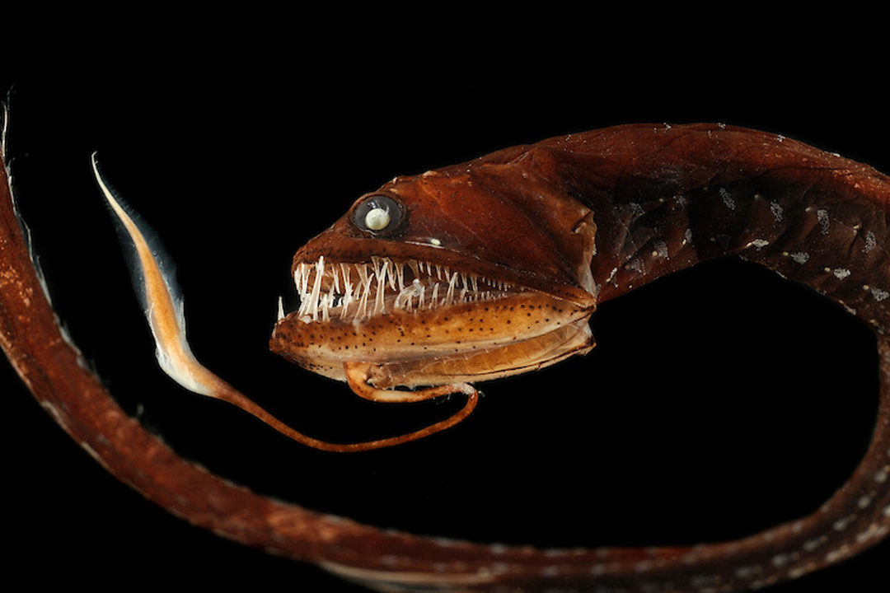
ปลามังกรน้ำลึก
ปลามังกรน้ำลึกเป็นปลาที่อาศัยอยู่ในทะเลลึก มีลักษณะพิเศษคือสามารถเรืองแสงได้
อ่านเพิ่มเติม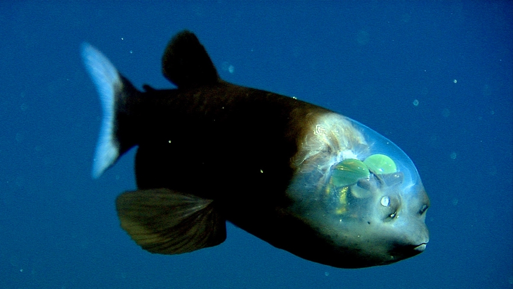
ปลาบู่ตาโปน
ปลาบู่ตาโปนเป็นปลาที่มีหน้าตาเป็นเอกลักษณ์ อาศัยอยู่ในทะเลลึกที่มีแรงดันน้ำสูง
อ่านเพิ่มเติม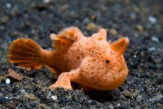
ปลากบ
ปลากบมีรูปร่างแปลกประหลาดและสามารถพรางตัวให้กลมกลืนกับสภาพแวดล้อมเพื่อดักจับเหยื่อ
อ่านเพิ่มเติม
หมึกกระดองยักษ์
หมึกกระดองยักษ์เป็นสัตว์น้ำที่มีความสามารถเปลี่ยนสีผิวเพื่อพรางตัวและสื่อสาร
อ่านเพิ่มเติม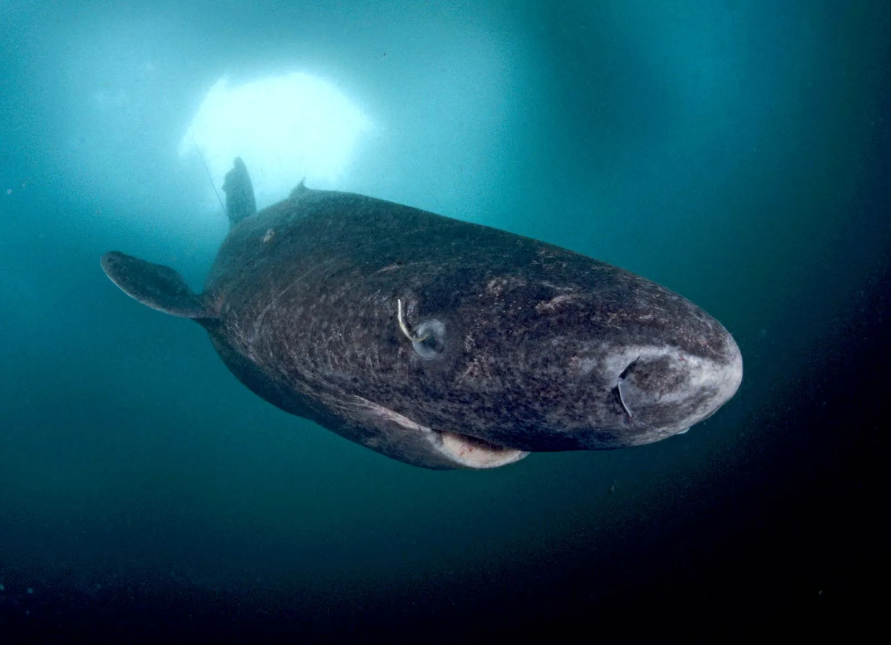
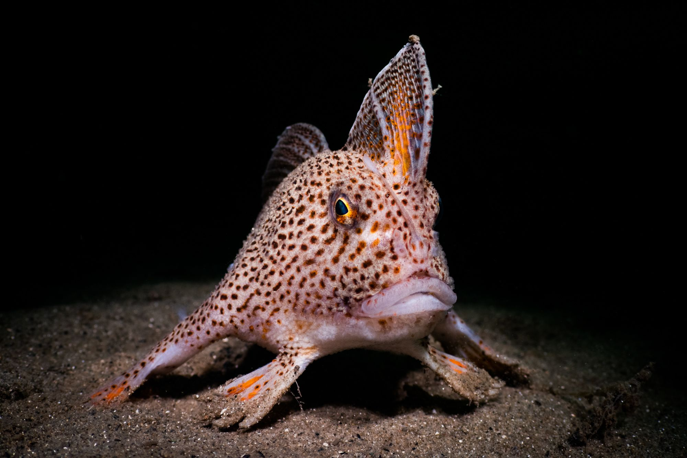
ระบบนิเวศ
ดำดิ่งสู่โลกของระบบนิเวศน้ำ สำรวจความเชื่อมโยงของธรรมชาติ และค้นพบบทบาทสำคัญของแหล่งน้ำต่อชีวิตทั้งมนุษย์และสิ่งมีชีวิตต่างๆ
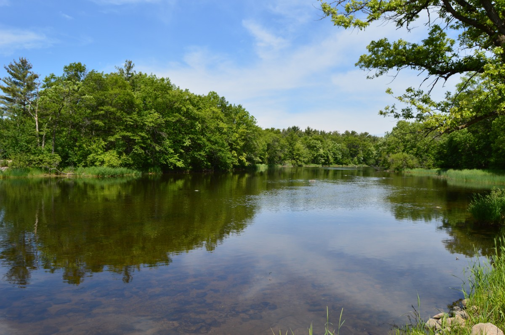
แหล่งที่มา: ระบบนิเวศน้ำจืด
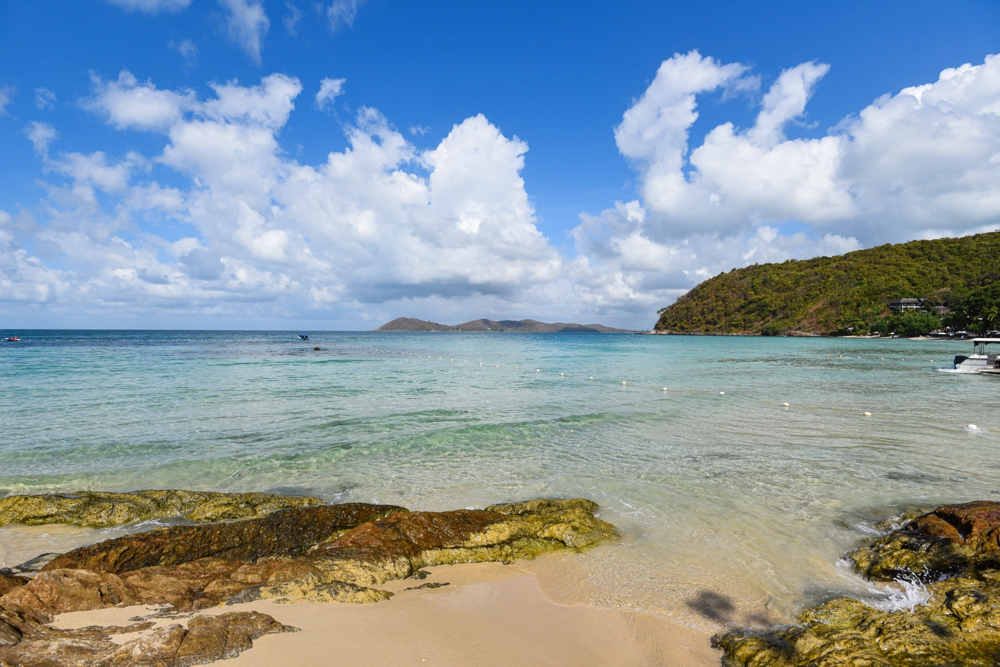
แหล่งที่มา: ระบบนิเวศน้ำเค็ม

แหล่งที่มา: ระบบนิเวศน้ำกร่อย
เรื่องน่ารู้เกี่ยวกับสัตว์น้ำ
ค้นพบเกร็ดความรู้ที่น่าสนใจเกี่ยวกับสัตว์น้ำ ที่อาจทำให้คุณมองโลกใต้น้ำในมุมใหม่!
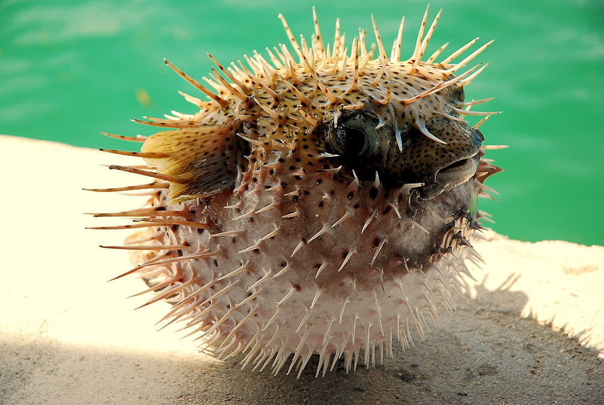
ปลาปักเป้า
ปลาปักเป้าสามารถพองตัวได้ 2-3 เท่าของขนาดปกติ เพื่อป้องกันตัวจากนักล่า
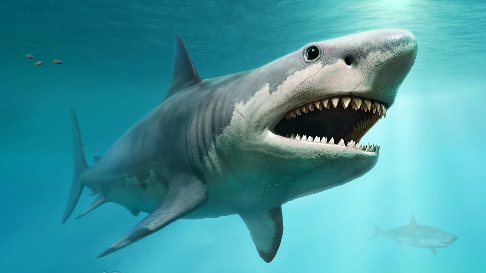
ปลาฉลาม
ปลาฉลามบางชนิดต้องว่ายน้ำตลอดเวลา เพราะพวกมันไม่มีถุงลมเหมือนปลาอื่น ๆ
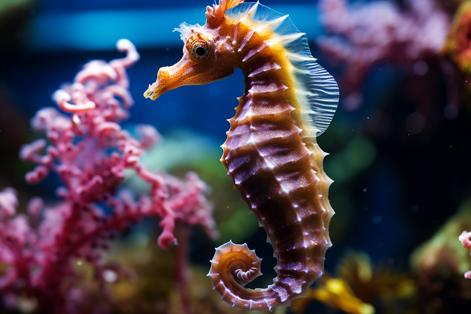
ม้าน้ำ
ม้าน้ำเพศผู้เป็นฝ่ายอุ้มท้อง และดูแลไข่จนกระทั่งฟักออกมา
การอนุรักษ์สัตว์น้ำ
ร่วมมือกันปกป้องแหล่งน้ำและสิ่งมีชีวิตในทะเล เพื่ออนาคตที่ยั่งยืน สร้างความสมดุลให้กับธรรมชาติ ด้วยการกระทำเล็กๆ ที่ยิ่งใหญ่
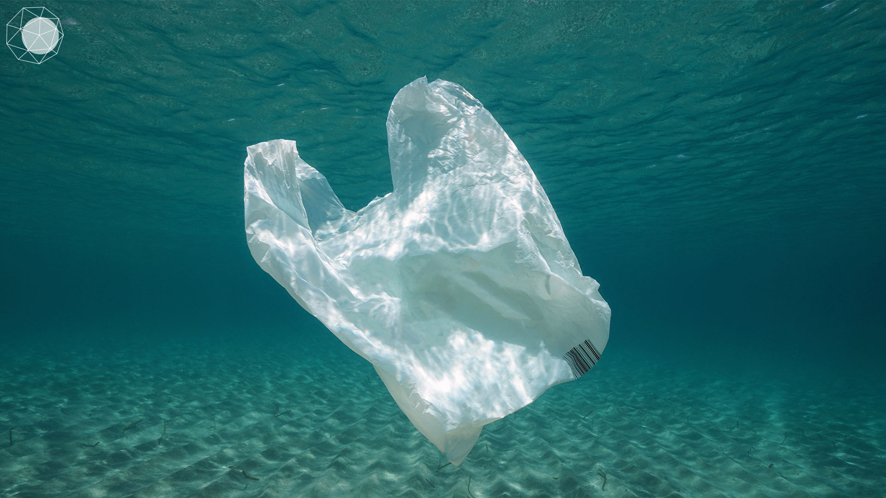
ลดการใช้พลาสติก
ลดการใช้พลาสติกเพื่อป้องกันขยะในทะเล และช่วยปกป้องสัตว์น้ำจากมลพิษ
อ้างอิง: Greenpeace
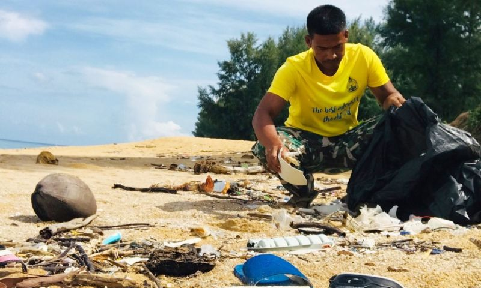
ทำความสะอาดชายหาด
ร่วมกิจกรรมทำความสะอาดชายหาดและแหล่งน้ำ เพื่อสร้างพื้นที่ปลอดภัยสำหรับสัตว์น้ำ
อ้างอิง: Ocean Conservancy
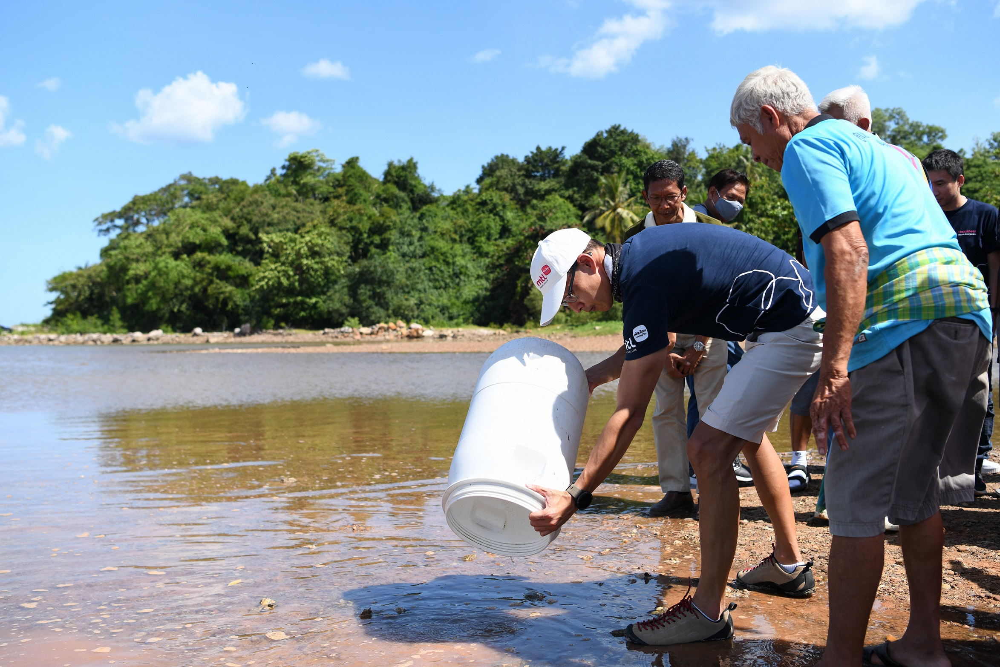
สนับสนุนการอนุรักษ์
เข้าร่วมกิจกรรมอนุรักษ์และเผยแพร่ความรู้เกี่ยวกับการปกป้องแหล่งน้ำ
อ้างอิง: World Oceans Day
เกี่ยวกับผู้จัดทำ
เว็บไซต์นี้ถูกสร้างขึ้นโดยนิสิตที่มุ่งมั่นเรียนรู้การพัฒนาเว็บและใส่ใจในธรรมชาติ